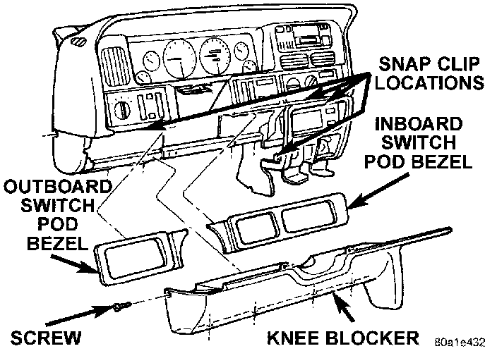
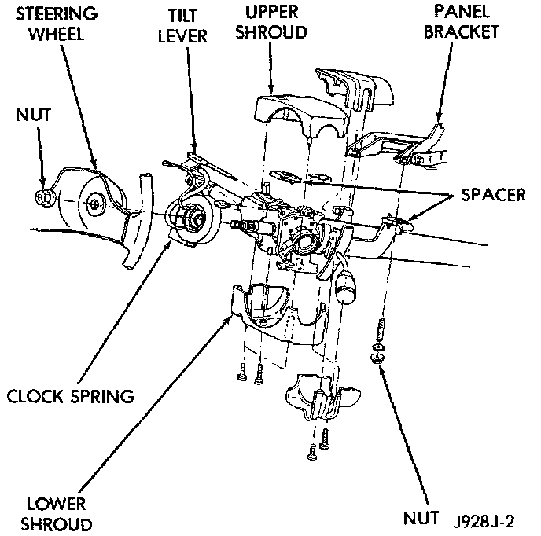
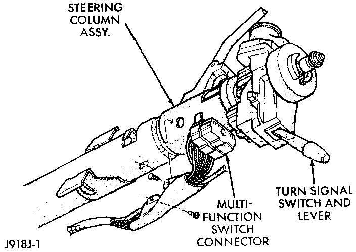

Front Wiper & Washer Switch
WARNING: ON VEHICLES EQUIPPED WITH AIRBAGS, REFER TO AIR BAGS AND SEAT BELTS/AIR BAGS BEFORE ATTEMPTING STEERING WHEEL, STEERING COLUMN, OR INSTRUMENT PANEL COMPONENT DIAGNOSIS OR SERVICE. FAILURE TO TAKE THE PROPER PRECAUTIONS COULD RESULT IN ACCIDENTAL AIRBAG DEPLOYMENT AND POSSIBLE PERSONAL INJURY.1. Disconnect and isolate the battery negative cable.
2. Remove the tilt steering column lever, if equipped.
3. Using a trim stick or other suitable wide flat-bladed tool, pry gently around the edges of the instrument panel switch pod bezels and remove both bezels.
Knee Blocker Remove/Install:

4. Remove one screw on each side of the steering column that secures the upper edge of the knee blocker/steering column cover to the instrument panel.
5. Remove the one screw that secures the outboard end of the knee blocker to the instrument panel.
6. Remove the four screws that secure the lower edge of the knee blocker to the lower instrument panel reinforcement.
7. Using a trim stick or other suitable wide flat-bladed tool, gently pry the edges of the knee blocker away from the instrument panel at the snap clip retainer locations.
8. Remove the knee blocker/steering column cover from the vehicle.
Steering Column Shrouds Remove/Install - Typical:

9. Remove both the upper and lower shrouds from the steering column.
10. Remove the lower fixed column shroud.
11. Loosen the steering column upper bracket nuts. Do not remove the nuts.
Multi-Function Switch Connector - Typical:

12. Move the upper fixed column shroud to gain access to the rear of the multi-function switch.
13. Remove the multi-function switch tamper proof mounting screws (a Snap On tamper proof torx bit TTXR20B2 or equivalent is required).
14. Gently pull the switch away from the column. Loosen the wire harness connector screw. The screw will remain in the wire harness connector.
15. Unplug the wire harness connector from the multi-function switch.
16. Reverse the removal procedures to install. Tighten the fasteners as follows:
- Multi-function switch wire harness connector screw - 2 N.m (17 in. lbs.)
- Multi-function switch retaining screws - 2 N.m (17 in. lbs.)
- Steering column upper bracket nuts - 12 N.m (110 in. lbs.).